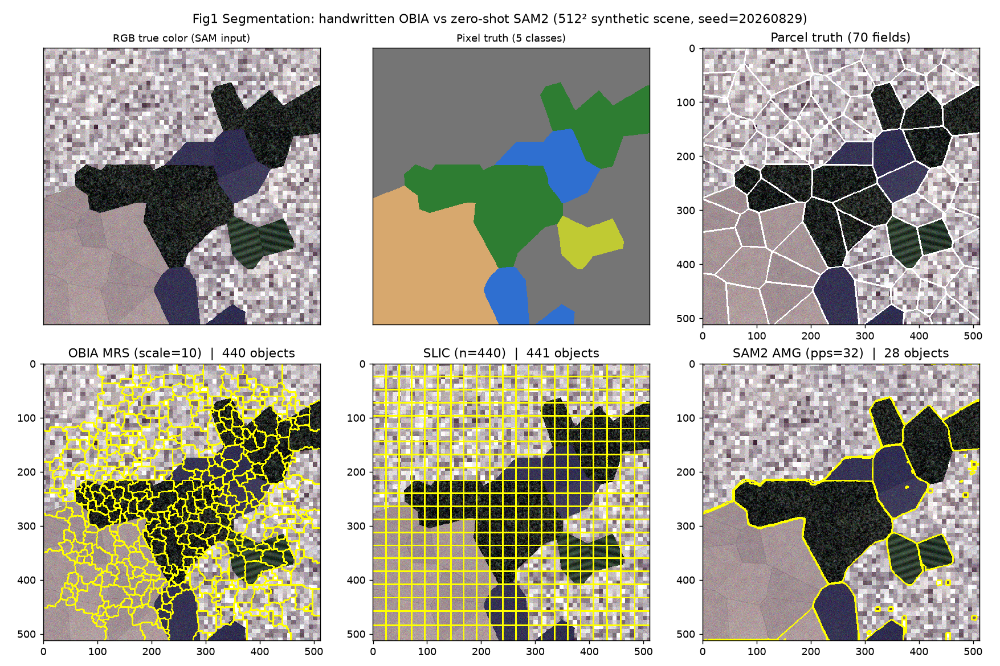
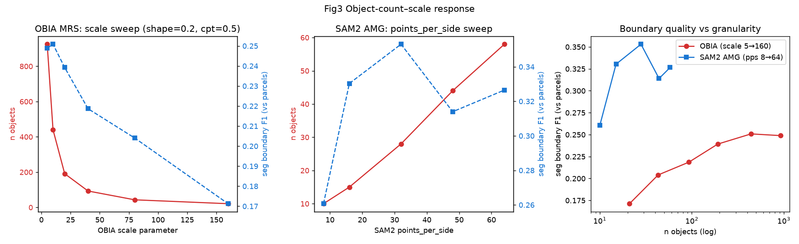
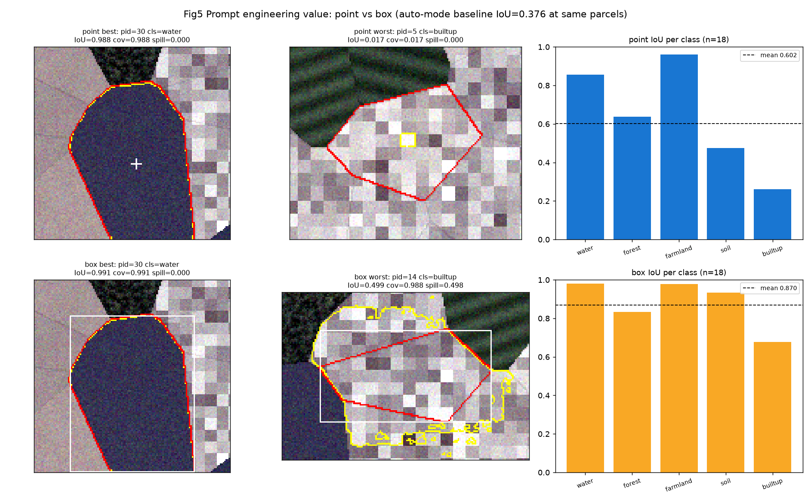
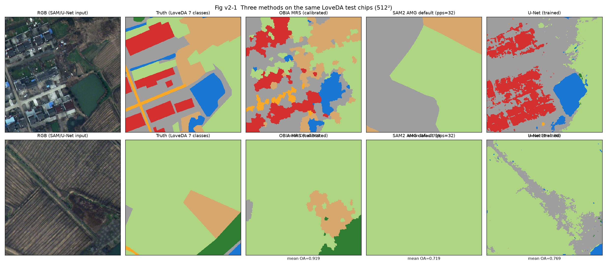
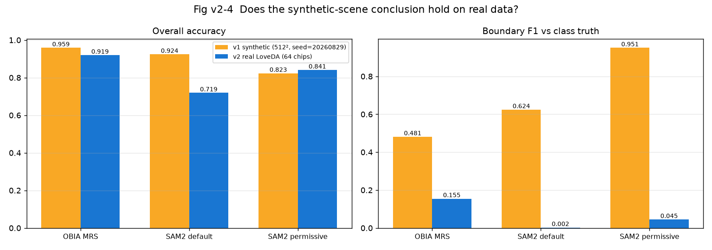

SAM2 零样本分割赢在边界与速度（自然图像预训练的边缘先验把"图斑壕沟"切得极准），输在开箱即用的分类精度与尺度可控性（AMG 大 mask 跨类合并、无"对象≈图斑"的尺度语义、默认阈值把 23.2% 的场景切成无人区）。遥感零样本工作流里提示工程是"从不可用到可用"的开关：一次点击不够，一个框刚好。
边界 F 计算器 / AMG 涂写演示 / 提示阶梯——真数据可玩，file:// 直开
📄 对比报告实验设计 · 主结果表 · SAM 赢/输条件 · 提示工程价值 · 诚实声明
📘 精讲教程设计逻辑 · 核心代码逐段精讲 · 从零复刻路线 · 面试话术与追问 QA
⭐ 仓库scripts/ · results/summary.json + raw jsonl 溯源账本 · test/test.py



| 方法 | 对象数 | OA | 椒盐率 | 边界F vs 地类 | 边界F vs 图斑 | 耗时 |
|---|---|---|---|---|---|---|
| 手写 OBIA (scale=10) | 440 | 0.9588 | 0.0018 | 0.4812 | 0.2508 | 77.9s CPU |
| SLIC (n=440) | 441 | 0.9452 | 0.0002 | 0.2851 | 0.2021 | 0.2s CPU |
| SAM2 默认 AMG (pps=32) | 28 | 0.9240 | 0.0005 | 0.6241 | 0.3531 | 3.2s GPU |
| SAM2 放宽阈值 | 47 | 0.8230 | 0.0005 | 0.9505 | 0.4853 | 3.6s GPU |
公平性：SAM mask 涂写为非重叠 label 图后，走与 SLIC 基线完全相同的"19 维特征 → 同种子 RF → 回填"下游协议； 指标代码经 sys.path 桥接自 obia-segmentation（零拷贝，测试断言同一函数对象）。 场景 seed=20260829 · SAM 输入仅真彩色 RGB（无 NIR）· 全部数字见 results/summary.json（可 1e-9 复算）。
| 场景 | 推荐 | 依据 |
|---|---|---|
| 矢量图斑 + 可解释特征 + 高 OA 自动分类（调查/变化检测入库） | OBIA | OA 0.959（合成）/0.920（真实），NDVI/纹理/形状可解释，产物直接入库 |
| 贴边界的快速勾绘、样本预标注（合成/高对比影像） | SAM2 | 合成场景边界 F 高 1.4~2 倍、快 24 倍、零样本免调参 |
| 小样本/无标注新区域冷启动 | SAM2 + 框提示 | 框提示 IoU 0.87 零训练；OBIA 的 RF 仍需标注样本 |
| 对象粒度可控（对象≈图斑） | OBIA | scale = 异质性预算；AMG 的 pps 不是尺度 |
| CPU-only / 全图 100% 覆盖硬约束 | OBIA | SAM 需 GPU；默认阈值在真实影像漏更多（12/64 芯片零提案） |
合成结论哪些成立？OBIA 的 OA 优势成立（0.920 vs SAM 0.719~0.841、U-Net 0.527）；"SAM 边界赢"翻转——真实影像边界是宽渐变带而非合成的 1px 壕沟，SAM 边界 F 从 0.62~0.95 崩到 0.002~0.045，AMG 极保守（默认档 12/64 芯片零有效提案、平均仅 5 个对象）；SAM 快依旧（6.4s vs OBIA 75s 中位）。两个新发现：零样本对输入预处理极敏感（原始 uint8 几乎失效、2% 拉伸后恢复——v1 口径救了它）；训练过的 U-Net 跨域泛化有真实代价（同域 0.749 → 跨域 0.527，农田→水体误认是主失败模式）。
| 方法（64 芯片 mean±std） | OA | 边界 F1 vs 地类 | 耗时（中位） |
|---|---|---|---|
| 手写 OBIA（scale=10 标定） | 0.920（med 0.935） | 0.155 | 75.4s CPU |
| SAM2 默认 AMG | 0.719（med 0.811） | 0.002 | 6.4s GPU |
| SAM2 放宽阈值 | 0.841（med 0.879） | 0.045 | 7.4s GPU |
| U-Net（从零训练 25 epochs） | 0.527（med 0.517；refined 0.770） | 0.074 | 0.11s GPU |


口径注意：OBIA/SAM 行的下游 RF 为逐芯片 60/40 真值监督（v1 传递协议，衡量分割质量）；U-Net 是无测试期监督的独立分类器（refined=其类别图再过 v1 下游协议的参考值）。绝对值横向比较需带此差异读。详见 README §9。